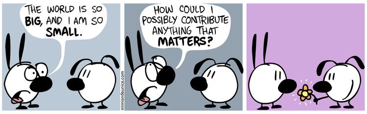

Contributing¶
What can you do to help this project ?¶
- Star it on GitHub
- Talk about it to your colleagues, spread the word!
- Have a look at the current issues
- Help with the translation
- Open GitHub issues to discuss bugs or suggest features
Translating¶
Do you know several languages? Are you willing to help localize eLabFTW? You’re in the right place.
Languages 100% translated:
- British English : en_GB.UTF8
- Catalan : ca_ES.UTF8
- German : de_DE.UTF8
- French : fr_FR.UTF8
- Italian : it_IT.UTF8
- Spanish : es_ES.UTF8
- Brazilian Portuguese : pt_BR.UTF8
- Simplified Chinese : zh_CN.UTF8
How to translate ?
- Join the project on poeditor.com
- Select elabftw
- Add a language (or select an existing one)
- Start translating
- Ignore things like <strong>, <br>, %s, %d and keep the ponctuation like it was!
Then email me the result, or send a pull request.
Contributing to the code¶
- before doing a pull request, open an issue so we can discuss about it
- base your PR on the hypernext branch, which is the development branch; master being the release branch
- most of the code is procedural, but a progressive transition to object oriented code is on the way
- classes should be in app/{models, views, classes} with namespace Elabftw\Elabftw
- a new class will be loaded automagically thanks to the use of PSR-4 with composer
- for i18n, we use gettext
- if you change a string in gettext _(‘they look like this’), change it also in a .po file (generally the french one) and generate a .mo file (with poedit)
- same if you add a string shown to the user, it needs to be gettexted
- if you make a change to the SQL stucture, you need to put add an update function in app/classes/Update.php and also modify install/elabftw.sql accordingly
- instead of adding your functions to inc/functions.php, create a proper class
- you can use the constant ELAB_ROOT (which ends with a /) to have a full path
- comment your code wisely
- your code must follow the PSR standards
- add a plugin to your editor to show trailing whitespaces in red
- add a plugin to your editor to show PSR-1 errors
- remove BOM
- if you make a change to the documentation, you can regenerate the HTML with grunt doc
- install grunt with :
$ npm install grunt grunt-contrib-uglify grunt-contrib-watch grunt-contrib-cssmin grunt-shell
$ npm install -g grunt-cli
API Documentation¶
You can find a PHP Docblock generated documentation on classes here (local link).
Have a look at the errors report to check that you commented all functions properly.
To generate it: grunt api
Automation¶
Since version 1.1.7, elabftw uses grunt to minify and concatenate files (JS and CSS). Have a look at Gruntfile.js to see what it does. Install grunt-cli and run it if you make changes to any of those files. Grunt can also be used to build the documentation or run the tests.
$ grunt # will minify and concatenate JS and CSS
$ grunt doc # will build this documentation
$ grunt api # will build the API documentation
$ grunt test # will run the tests with codeception
Note
You need to have a running Selenium server to do the acceptance tests
Reminders¶
- update of SwiftMailer and mPDF is done with composer update
- update of the js components is done with bower update
- after update of tinymce, lang files need to be downloaded again, and the ones without proper name (ca instead of ca_ES) need to be edited (change first line to ca_ES)
- for a new version, one needs to edit app/classes/Update.php, package.json and doc/conf.py
Make a gif¶
- make a capture with xvidcap, it outputs .xwd
- convert .xwd to gif:
$ convert -define registry:temporary-path=/path/tmp -limit memory 2G \*.xwd out.gif
- generate a palette with ffmpeg:
$ ffmpeg -i out.gif -vf fps=10,scale=600:-1:flags=lanczos,palettegen palette.png
- make a lighter gif:
$ ffmpeg -i out.gif -i palette.png -filter_complex "fps=10,scale=320:-1:flags=lanczos[x];[x][1:v]paletteuse" out-final.gif
- upload to original one to gfycat and the smaller one to imgur